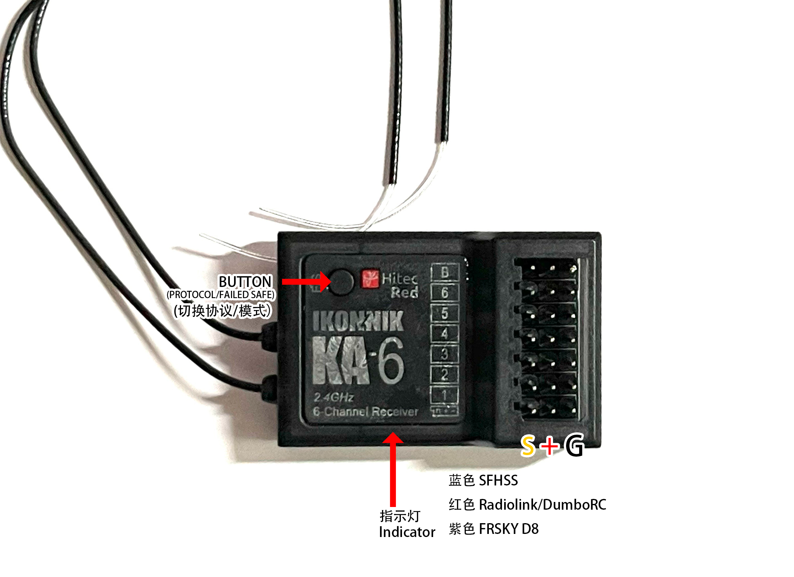

Futaba乐迪小飞象Frsky7通多协议接收机KA6
非常有特色多协议的接收机，购买办法，某宝/某鱼，搜ka6即可.
重量：10g
尺寸：40x28x14mm
工作电压：3.7-5v
信号输出： 7个PWM通道
支持协议：Futaba SFHSS, Radiolink,DumboRC, Frsky D8
遥控距离：SFHSS 使用 4合1高频头，空中大于500米，地面200米，每个协议，发射器和环境相关性很大，这个仅作参考
注意事项： 接收机使用了LNA，使用时要保持和发射器(遥控器）0.5米以上，太近信号反而不好。
1.Supported TX List,Keep Updating,支持的遥控器型号列表
1.FUTABA
T14SG,T16iZ, T16SZ,T18MZ, T18MZ-WC. T18SZ, T4P, T10px,T8J,T10J,T10JA, T7px,T6J,T6K,T6K-V3S, FX 22, FX 32, LDARC EX8
2.RadioLink乐迪
T8FB,T8S,RC8x,RC4GS,RC6GS,T12D,T16D
3.DUMBORC 小飞象
X6,X6p,X6pm, x10, DDF350
4.FrSky睿思凯
支持FRSKY D8的遥控，如 DJT, DHT,XJT , TANDEM X12,X14,X18SE,X20, X20RS, XE,TWIN X LITE,Taranis,X-Lite s/pro,TARANIS X7,X9D, X9D plus, X9D Plus SE, horus x10 ,horus x10s
5. 内置和外置高频头的多协议开源控(Multi protocol Module Installed)
常用的品牌，Jumper, RadioMaster, RadioKing，华科尔等任何控带以下高频头都可以支持，
CC2500高频头， 4in1高频头， 5in1高频头，
2. 对码方式
1. 接收机供电，观察指示灯，要是3长2短，表示是在对码状态，如果不是的话，等20秒，它就会变成3长2短
2. 根据你的遥控器选择正确的协议，短按上图的对码键，可以切换协议，按一下指示灯的颜色变变一次， 如Futaba SFHSS是蓝色灯， RadioLink乐迪和DUMBORC 小飞象 是红色， FRSKY D8则是紫色（红+蓝）。
3. 对码时，要保持接收机和遥控器0.5米以上，SFHSS，乐迪和小飞象静待1分钟左右，Frsky D8 按下对码按钮，看到指示灯快闪然后保持长亮就对好码了。
4. 如果对好码的接收器想和另一个遥控器对码，那么可以把旧的遥控器关掉，接收机重新上电，然后等20秒，指示灯就会变成3长2短了。 跳到步骤2进行对码即可。
3. 设置失控保护
对好码之后，打开接收机和遥控器，在接收机指示长灯的状态下，把失护时想要使用的摇杆和按钮位置保持好，按一下接收机上的按钮。接收机的指示灯就会快闪，然后常亮，此时失控保护就设置好了。